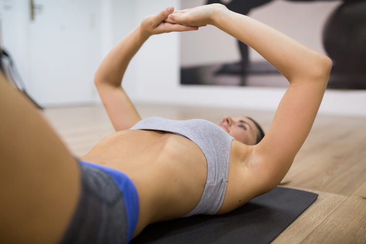

info@sibfisioterapia.com
872 037 097 - 626 530 484
C/ Cristòfol Grober 6, 1er 2a 17001 Girona
GIMNÀSTICA HIPOPRESSIVA



Abdominals hipopressius
| Dilluns | Dimecres | Dijous |
|---|---|---|
| de 14 a 15 | de 14 a 15 | |
| de 15 a 16 | ||
| de 18 a 19 | de 18 a 19 | de 19,30 a 20,30 |
La "Gimnàstica Abdominal Hipopressiva" és una tècnica innovadora desenvolupada per Marcel Caufriez i provada científicament. Indicada per crear una faixa abdomino lumbar i recuperar el sòl pèlvic entre d’altres beneficis. Amb la seva pràctica s’aconsegueix una correcta higiene postural i disminuir el dolor en la vida diària. També està indicat per les persones que vulguin millorar el seu rendiment esportiu.
Amb la pràctica dels hipopressius podem treballar de forma no agressiva sobre la faixa abdominal i el sòl pelvià, obtenint uns molt bons resultats.
- Reeducació incontinència urinària i anal
- Prolapses, descens d’òrgans de la pelvis (bufeta i pròstata)
- Millora disfuncions sexuals en l’home i la dona
- Preparació al part i post part
- Rendiment esportiu
© 2014 - SiB Fisioteràpia
Politica de privacitat. Crèdits